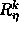
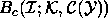
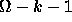
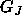
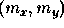
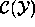
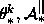
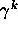
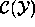
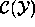

Image interpretation is a high level vision task which is hard to
automate, considering the fact that the human visual system, undoubtedly,
the best visual system, is fooled quite often, especially when
other sources of information which help in disambiguating illusion are
hidden. Interpretation is a high-level description of the environment
from which the image was taken. It is essentially an analysis problem
where we try to understand the image by identifying some important
features or objects and analyze them depending on their spatial
relationship. Figure 1.1 shows the task of scene
interpretation.
Figure 1.1: Overview of image interpretation task.
Interpretation must be in the form that is suitable for planning such
diverse activities as robot arm and hand motion, obstacle avoidance by
vehicle, aircraft navigation, remote sensing or in biomedical
applications. Image interpretation is knowledge based processing, which
requires the use of both low-level processing (image processing
techniques of contrast enhancement, computer vision techniques of
segmentation, feature extraction, region labeling) and high-level vision
tasks involving processing a great amount of non-image related
knowledge underlying the scene representation, for example, knowledge
about the world physical constraints influencing entities [1]. At low-level the basic processing unit
being pixel, there is no simple computational transformation that will
map arrays of pixels onto stored symbolic concepts represented in the
high-level knowledge base. It is generally accepted that many stages of
processing must take place for reliable interpretation of a scene.
The layout of this chapter is as follows: The problem of image
interpretation is introduced in Section 1.2. In Section
1.3 we review briefly the available literature. The
problem of image interpretation in the perspective of the generalized
framework of modular integration and multiresolution, developed in Chapter
, is formulated in Section 1.4. The
detailed scheme of the proposed joint image segmentation and image
interpretation is sketched in Section 1.5. Feature
selection is an important aspect of image interpretation, the various
features used for image interpretation are described in Section
1.6. The proposed framework of modular integration and
multiresolution is validated by experimental results in Section
1.7. In Section 1.8 we
conclude and give directions for future work.
Though considerable amount of work has been done in the area of image
interpretation one is still on the lookout for a fully automated image
interpretation scheme. Automatic scene interpretation requires the
construction of at least a partial description of the original
environment, rather than a description of the image itself. It involves,
not only labeling certain regions in an image, or locating a single
object in the viewed scene, but often requires a 3D model of the
surroundings, with associated identification in the 2D image.
For high-level interpretation, the principle unit of information is a
symbolic description of an object, or a set of image events, sometimes
referred to as symbolic tokens, extracted from the image. The description
includes relationships to other 2D symbolic tokens extracted from
the sensory data, such as lines, segments and other objects in the 3D
scene being viewed. It also includes pointers to elements of general
knowledge that has been used to support the interpretation process.
As seen in Figure 1.1, the task of image interpretation
would essentially involve the task of segmenting (not shown in Figure
1.1) the image to produce
regions which have some relation to the objects in the scene and
then using some a priori knowledge to interpret, regions in the segmented
image. The image interpretation task is very much dependent on the a
priori knowledge, in the sense, knowledge acquired from a scene should
bear resemblance to the scene that is being interpreted. In other
words, the knowledge must have been acquired from a scene which belongs to
the same class as the scene that is being interpreted. In
literature, this aspect of image interpretation has either been taken for
granted or not addressed at all; in this sense the task of image
interpretation is nowhere close to being called fully automated.
The need for image interpretation can be found in many diverse fields of
science and engineering. For example, a major application of image
interpretation is in remote sensing which is widely used in geographical
surveys and military applications. Image interpretation also plays a
major role in biomedical science and particle physics, where many of the
results are recorded in the form of photographs.
Traditionally, the task of image interpretation is performed by
experienced human experts. However, analyzing a complex image is quite
labor intensive, hence, much of the research is directed towards
constructing automated image interpretation systems. Recent research in
intelligent robots has created yet another need for automated image
interpretation. In this case, the requirement is to understand what the
robots see with the imaging sensors to be able to perform intelligent
task in complex environments. Here, the robots have to rely entirely on
automated image interpretation.
The main approach in early research in image interpretation was that of
classification, in which, isolated image primitives were classified into a
finite set of object classes according to their feature measurements.
However, since low-level processing often produces erroneous or incomplete
primitives, and the noise in the image may cause measurement errors in the
features, the performance of the image interpretation systems using the
classification approach is quite limited and prone to mistakes. The main
problem here is that the rich knowledge in the spatial relationships that
the human expert use is not used in the process of image interpretation.
The interpretation literature is quite vast and is under investigation
since a couple of decades. The first available literature dates back to
1969 [2,3,4]. Research in the area of
image interpretation encompasses images related to biomedical
applications [5,6,7,8,9], satellite images [10], aerial imagery
[11,12,13,14,15,16,17,18,19], road scenes
[20], range images [21,22,23,24], natural scenes [25,26],
natural color scenes [27], infra red imagery
[28,29], remotely sensed data [30,31], seismic data [32], SAR images
[33], laser radar images [34], astronomical
image [35], thermal images [29], ultra sound
images [36,8], geophysical image
[37], from stereo [38,39] and
moving images [40,41] or moving viewer
[42].
Early work on image interpretation was based largely on isolated image
features and these salient features were classified into a finite set
of classes, namely, interpretation labels, presumably this scheme is
not robust especially when the low-level vision tasks give out an
erroneous output. More recent approaches adopt knowledge based systems
for image interpretation. Here, a great amount of non-image related
knowledge underlying the scene representation is used along with the
spatial constraints. Thus, even an ambiguous object can be recognized
based on the successful recognition of its neighborhood objects.
The early work in knowledge based image interpretation is summarized in
Nago and Matsuyama [11], Binford [43], Ohata
[27], Smyrniotis [44], Ballard
[45], Draper [20], Mitiche [46] and
more recently by Chu [34,47] and for man made
objects like office buildings and houses in an aerial images by Schutte
[19]. Rule based strategies are especially appropriate in
view of lack of complete models and algorithmic strategies
[32,1,48,49]. Fourier domain has
been used for interpretation and classification of images
[3], projective invariants and deformable templates for
interpretation of SAR by [33], cellular automata
[50], morphometric and densitometric approach
[51], Bayesian networks [52,53,54,55], Algebraic Topology [56] and of late,
Markov Random Field (MRF) models are being used for image interpretation
with the view to make the interpretation systematic and domain independent
[57,58,55]. Most of the interpretation
schemes assume the availability of a good segmented image of the scene a
priori. But in practice obtaining a good segmented image is
difficult for the simple reason that segmentation itself depends on
interpretation and hence is a function of the output of interpretation.
Experiments conducted by Tenenbaum and Barrow [59], where they
experiment on the use of interpretation to guide segmentation, indicate
the first possible use of interaction between the interpretation and
segmentation modules.
Though their requirement was to segment an image, we
see that it was a good step, till then though it was known that
both segmentation and interpretation were related, the fact was not
exploited. Later
there was discussion in this regard by Bajcsy in [60].
Sonka et al [61] have integrated segmentation and
interpretation into a single feedback process that incorporates
contextual knowledge. They use genetic algorithm to produce an
optimal image interpretation. More recently, Kim and Yang
[58] integrate segmentation and interpretation by forming a
combined weighted energy function; the segmentation block is weighted
high initially and as the algorithm iterates the weights shift to the
interpretation block.
In this thesis, we propose a scheme for joint segmentation and image
interpretation in a multiresolution framework. The scheme is developed in
the modular integration and multiresolution framework (Chapter
).
Unlike earlier work in multiresolution interpretation
[14] we do not assume a priori, the availability of the
segmented
image. In fact, in our approach, segmentation and interpretation are
interleaved (modular integration) as shown in Figure 1.2 and
the two operations are carried out at each resolution (multiresolution),
the idea being that the two operations while integrating, help each
other to perform better. The segmentation module helps the interpretation
module which in turn helps the segmentation module.
Figure 1.2: Macro-level joint segmentation and image interpretation scheme.
The problem of image interpretation would essentially involve the
low-level vision task of image segmentation to produce regions in the given
image corresponding to some objects in the scene and then giving some
labels or interpretation to the segmented regions based on some a priori
knowledge. Table 1.1, gives the high-level vision task
of image interpretation as seen in the generalized framework of modular
integration and multiresolution. In
general, one is given an image which is a projection of a 3D scene onto
the 2D plane and some knowledge about the 3D environment. From the 2D
image we need to segment the image and interpret the regions based on the
segmented image. This is shown in Figure 1.2, except for the
fact that the portions corresponding to wavelet transform and
refine using difference image do not come into existence.
Table: Image interpretation in the generalized framework perspective
developed in Chapter .
The vision task of image interpretation in the perspective of the
developed generalized framework of modular integration and multiresolution
can be explicitly stated as:
Given the image which is a projection of a 3D scene onto the 2D
plane at the finest resolution , defined over the 2D lattice of size
, and some knowledge about the 3D environment.
The problem of interpretation involves
segmenting the image to
obtain and
interpreting the image , based on the segmented image
and the domain knowledge .
We now formulate the problem of image interpretation by synergistically
integrating both the segmentation and the interpretation modules in a
multiresolution framework. We term this procedure of interleaving
segmentation and interpretation procedures as joint segmentation and
interpretation scheme. The idea of integrating these two operations is
two fold (i) both segmentation and interpretation modules by themselves do
not work efficiently because a good segmented image helps the
interpretation module perform better and to get a good segmentation,
knowledge of the scene, or in other words the interpretation of the scene
is essential, and (ii) we end up getting as a byproduct a better
segmented image in addition to a correctly interpreted image. The idea of
formulating this problem in a multiresolution framework is to speed up
computation as discussed in Section . It turns out
that we need not work on the whole image but could stop at one level
coarser resolution while interpreting, namely if we need to interpret a
image it is enough if we interpret a
image.
Figure 1.3: Wavelet Transform representation of .
We construct the wavelet transform of the image
[62] which results in =,
the low pass filtered image and , , the difference image, each of size
. Figure 1.3 shows the
wavelet transformed structure of , where
() corresponds to the difference image obtained
when is filtered by a high pass filter along the rows
(columns) and by a low pass filter along the columns (rows).
The low pass filtered image is segmented using any
segmentation algorithm. In this thesis for the purpose of simulations we
have used the k-means clustering
algorithm (see Appendix ) to produce a crude segmented
image. The segmented
image is refined using the difference image (,
, ) as described in Section
1.5.
The segmented image is subjected to interpretation. The problem of image
interpretation is formulated in a MRF framework along the lines of
Modestino and Zhang [57] except that we have a provision for
a no-interpretation label . The reason for having
no-interpretation label, as a possible label, is to refine the segmented
image before further interpretation can be carried out. The process of,
interpretation, merging of the no-interpretation labels to produce a
better segmented image and again interpretation, is carried out
until none of the regions have label no-interpretation (see Figure
1.2). The resulting segmented image is assumed to be
the final segmented image and final interpretation is carried out on it.
Figure 1.4: Segmented image represented as a graph.
At each resolution (say k) let the segmented image (see Figure
1.4) be
represented as an undirected simple planar graph. The nodes being represented by the n regions in
the segmented image and the edges representing the connectivity of the
regions. Let , , ,,
be the possible labels (
no-interpretation label, and are
the m interpretation labels) and let the interpretation be a
random variable associated with the region , ,
and takes a value from the label set . Define . If
is the domain knowledge and are the core variables
obtained as a result of measurements made on the segmented image
, then analogous to [57] we assume that the
conditional probability of , given and
is a Markov Random Field, namely,
is a MRF.
The image interpretation problem is posed as an optimization problem and the
optimal interpretation
label vector is obtained by solving the MAP estimation problem,
namely,
The problem of interpretation reduces to the problem of minimizing the
energy function . The energy
function is constructed such that it takes a minimum value when the
interpretation labels are consistent with the knowledge and the
core variables derived from . The
minimization of the energy functional results in interpretation of the given scene. Now,
where 's are the clique functions which
need to be constructed.
The clique function
should decrease when the interpretation labels are consistent with the
domain knowledge and core variables, thus resulting in a decrease of the
energy function. This
means that the interpretation of the image that is most consistent
with the domain knowledge and core variables will have minimum energy. For
completeness, we present the clique function for 1-node and 2-node
cliques [57].
Single or 1 - node clique functions: Let c be an
arbitrary single node clique corresponding to the region
, with a single node . Let
be the corresponding clique
function. Let there be p features associated with core variables
=
. Assume these core variables to be
independent, then the clique function can be defined
as
where are positive constants called
weights, such that and is the basis function associated with the feature i, which
satisfies the requirement of the clique function, namely, it should take a
small value when the interpretation labels are consistent with the domain
knowledge and the core variables. Now, the construction of the clique
function reduces to the construction of a basis function. The choice of
the basis function could come from suitably modified to adhere to the requirement
mentioned above,
or we could use a piecewise linear basis function as in
[57]. An example is illustrated in Figure
1.5
for the average gray level feature for road, and using the knowledge-base
in Table 1.5.
Figure: Example of a basis function used for the average gray level
feature for road (see Table 1.5). Here, a=60, b=65, c=75, d=80
There is nothing special about (1.3), any function which has
the form shown in Figure 1.5 can be used in place of
. For example a variation of sigmoidal,
can be used. The plot of this function is given in Figure 1.6.
Figure 1.6: Basis function - variation of sigmoidal.
2 - node clique functions: The construction of a multiple node
clique function is similar in philosophy to the 1 - node clique except
that it has two types of basis functions.
The first one is similar to that of 1 - node clique function, and
depends on
the feature measurements (core variables); the second part depends on the
spatial
constraints ( like a car can be in the neighborhood of a road but not
in the neighborhood of sky).
where, and , such that,
Note, c is a 2 - node clique and
represents a valid combination and represents
an invalid combination (See Tables 1.5,
1.6 and 1.7).
Figure 1.7: Micro-level joint segmentation and image interpretation
scheme.
The proposed scheme of joint segmentation and image interpretation is
pictorially depicted for two resolutions in Figure
1.7. The description of the algorithm is based on Figure
1.7.
The joint segmentation and image interpretation algorithm
Step 0:
Initialization
Given:
the a priori knowledge and
(Figure 1.7 component a), the scene to be
interpreted, defined on a lattice of size
Construct
,
, , ,
, , , , , using a wavelet filter (Figure 1.7 component b).
Step I:
Segmentation and refining:
Obtain the segmented image of using k-means clustering
algorithm (Figure 1.7 component c) and refine
,
using , and and using a predefined threshold to merge all segments whose
area is less than the prespecified minimum area, to get
(Figure 1.7 component d).
At the coarsest resolution .
Construct histogram of , choose dominant peaks - let
there be B such peaks. These are the chosen values of the bins in the
k-means clustering algorithm.
k-means clustering algorithm will produce, say, some M segments
using the optimality criterion, namely, that the pixels which are within a
region are as close as possible to the centroid of the region.
Refine the regions or segments obtained from Step (I.1.b) using the
difference images , and
and the minimum area criteria.
Figure 1.8: To describe the process of refining segmentation.
Refinement using the difference image : The refinement procedure
is best described by looking at Figure 1.8. For example if
is not zero at the pixel location it means
that there is a diagonal edge present at the pixel location .
The presence of an edge means that pixels and
should not belong to the same segment. If the pixels and
belong to different clusters they are not touched, else pixel
is assigned a new segment which is not the same as that
occupied by pixel . The assignment of the segment label is based on
the nearest neighborhood scheme: pixel is assigned to that
segment whose centroid is closest to the gray level value of the pixel
and excluding the centroid of the segment to which pixel
belongs. In a similar manner refinement is done using the
difference
images and corresponding to
the vertical and horizontal edge fields respectively.
Refinement using the minimum area criterion: Let k be a
region with an area less than the minimum area and let l, m be
regions adjacent to region k and having areas greater than the
minimum area. Then the refinement criterion is:
region k is merged with region l if the difference between the gray
level of the centroids of regions k and l is less than the difference
between the gray level of the centroids of regions k and m.
In other words, if represents region q and
represents the average gray level value of region , then the above
criterion translates as:
where, the notation means that region
and are merged to form a new region .
At any resolution
Quadtree interpolate the segmented image at to
resolution. If is the
pixel of the segmented image at resolution ,
then
Use this information as the initial segmented image. In addition the
centroids of each of the regions is also transfered to the next
finer resolution. These centroids are then used to initialize the bins to
be used in the k-means clustering algorithm at resolution .
use the interpretation labels obtained from the previous resolution
, to initialize the interpretation labels at this resolution.
Repeat (I.1.b) and (I.1.c) for resolution .
Step II:
Interpretation - Segmentation loop
Interpretation: The segments are
interpreted using the knowledge base , the core variables
derived from
the segmented image and using the assumption that the
conditional probability is a MRF (1.1). This
conditional probability can be minimized using a relaxation
algorithm (in our simulations we used the simulated
annealing algorithm). The energy to be minimized is
where,
and
are the clique potentials
(See Section
1.4.1).
Recall that contains the no-interpretation
label. Thus our criterion for moving from coarse to fine resolution is:
if none of the labels have the label no-interpretation then move
from the present coarse resolution to the next fine
resolution (Step III).
Segmentation: In case any segment has the label
no-interpretation, we merge it
with one of the
interpreted segments which is adjacent to it,
depending on a probability criterion. For example:
If region j has label no-interpretation, that is,
takes the label and if l,m are the
regions adjacent to region j, then region j is assigned the
interpretation label corresponding to the region l if
> . In other words,
This step will output a better segmented image.
Go back to Step II (Interpretation-Segmentation loop)
Step III:
Coarse to fine resolution
If not working at resolution
Interpretation
labels at this resolution are transfered to the next finer resolution
()
; go back to Step I (segmentation and refining)
At resolution :
Output the interpretation labels,
Output the segmented image
Quadtree interpolate the segmented and interpreted images to obtain
the final segmented and interpreted images at the finest resolution
(in all our experiments, we have found that it was
sufficient to stop the algorithm at resolution instead of
segmenting and interpreting the image at resolution ).
Table 1.2: Rules for constructing knowledge pyramid
Remark: In principle it may be possible to generate the
knowledge base separately at each resolution. But, knowledge base
generation is a user interactive process, which tends to get difficult at
coarser resolutions. Thus, we prefer to use the rules described in Table
1.2 for constructing the knowledge pyramid.
Though there is usually not much discussion initiated on the selection of
features as applicable to image interpretation, feature selection forms an
important aspect of image interpretation. The choice
of features
impose assumptions on the problem of image interpretation. Table 1.3 illustrates the assumptions that
are imposed on the problem when that feature alone
is used for the purpose of image interpretation. For example, if average
gray level is selected as the only feature for image interpretation, then
one is assuming the fact that the scenes that are
being interpreted have been captured under the same lighting condition
(else the use of this feature for image interpretation does not makes
much sense).
The choice of features and the assumptions that they explicitly
impose on the problem are tabulated in Table 1.3. The
a priori knowledge is also very crucial, infact this imposes a very
strong assumption that we are aware of what to expect from the scene even
before we allow the algorithm to do the interpretation. In other words, we
cannot have the knowledge associated with a scene which is completely
different from the scene to be interpreted, for example we cannot use the
knowledge obtained for an indoor scene to interpret outdoor scenes.
Features that are useful for image interpretation can be broadly
classified as (i) primary features, namely the features that are obtained
from the scene through direct measurement and (ii) secondary features,
namely the features that are derived from primary features and hence are
not directly measured from the scene.
Table 1.3: Assumptions imposed on the problem due to the choice of
features.
The secondary features are nothing but shape descriptors and are simply
combinations of primary features or size parameters, arranged so that
their dimensions cancel out.
This helps in retaining the numerical value of the secondary feature
when the size of the feature is changed. There are many dimensionless
expressions (formed from the combinations of the size parameters), but
only a few are relatively common combinations [63].
Compactness
Orientation
where, ,
,
and
,
,
,
,
Boundary length
The length of the boundary common to two
adjoint regions I and J is given by
where, is the boundary of region I,
is the boundary of region J and
is the boundary common to regions I and J
Contrast
where, is the average gray value of the region I,
 is the average gray value of the region J
Roundness
Aspect Ratio
Convex area and area are best described in Figure
1.9.
The region A gives a measure of the area of a segment while the convex
area is obtained by summing A, B, C, D, E, F, G, and H. Convex perimeter
is defined as the length of the hashed line. The secondary
features associated with these features are convexity and solidity are
as defined below
Figure 1.9: Area (A), convex area (A+B +C+D+E+F+G+H).
Convexity
Solidity
Extent
Length and width make more sense when the body is rigid, on the other
hand, if the object is really a worm or a noodle that is flexible, and
the overall shape is an accident of placement, it would be much more
meaningful to measure the length along the fiber axis and the width
across it. To distinguish from length and width these are sometimes
called fiber length and fiber width. Curl and Elongation are the
secondary features that are associated with these features.
Curl
Elongation
There is a definite advantage of using features which are invariant
under certain operations compared to those that change. For example, the
secondary features that are obtained as ratio of other primary features
may prove to be more useful even when the two images (image from which
knowledge was acquired and image to be interpreted) are scaled versions of
each other or we are working in a multiresolution framework. Another example
which would work under different lighting
conditions is the contrast in the gray levels between two adjacent
regions.
Nevertheless, one can still use these non-ratio features
provided one is aware as to how the features change
over scales (see Table 1.2). This knowledge can be
appropriately used to solve the vision
task of image interpretation in the proposed multiresolution framework.
Experiments were carried out to validate the proposed scheme of joint
segmentation and image interpretation in the framework of
modular integration and multiresolution. Tests were conducted
both on real
outdoor (road images) and indoor (computer images) images of size
which were either captured using the QuickTake100 digital camera (Figures
in Section 1.7.2) or using an aim and
shoot Kodak Pro 111 camera and then scanning using the HP Color Scanner
(Figures in Section 1.7.3).
Figure: Features used in scene interpretation.
Table 1.4 gives their mathematical definition.
Feature selection is an important aspect of image interpretation.
Table: Definitions of features used in our simulations (Figure
1.10
shows these features with an example).
The features used in all our experimental work are (Table
1.4): (i) Single node cliques: area , perimeter
, average gray level , the mass center , variance
, compactness and (ii) Two node cliques: contrast ,
common perimeter ratio or boundary length .
Figures 1.11a and 1.12a are the original images
of the scene to be interpreted and 1.11b and
1.12b are the wavelet transformed images of
1.11a and 1.12a respectively using the 4 tap
Daubechies filter coefficients. The is segmented
using the k-means clustering algorithm and refined using , and as
described in Section 1.5 (See Figure 1.3). The
resulting image is displayed in Figure 1.11c and
1.12c. Figure 1.11d, 1.12d and Figure
1.11e, 1.12e depict segmentation and
interpretation of the scene at
an intermediate stage. The final segmented image is shown in Figure
1.11f and 1.12f. The final interpreted image is
shown in Figure 1.11g and 1.12g. The a priori
knowledge (details regarding the acquization of knowledge can be found in
[64]) that is used for interpreting the images in this
section is tabulated in Table 1.5.
Table: Knowledge base used for the road images (Section
1.7.2).
Figure 1.11f the segmentation is not perfect, for example the
road is in fact divided into 2 different segments, but the interpretation
block interprets both the segments as road and this is seen in Figure
1.11g. This is an indication that the segmentation and the
interpretation modules cannot work independently, they work best when they
work synergistically. This aspect of modular integration is also seen in
Figure 1.12g, where the segments corresponding to sky (see
Figure 1.12f ) are all merged into a single segment after
interpretation.
Figure 1.11: (a) Original image of size ,
(b) wavelet transformed image, (c) initial segmentation (after k-means
clustering) of size , (d) segmentation at an intermediate
stage, (e) interpretation at an intermediate stage, (f) final
segmentation, and (g) final interpretation.
Figure 1.12: (a) Original image of size ,
(b) wavelet transformed image, (c) initial segmentation (after k-means
clustering) of size , (d) segmentation at an intermediate
stage, (e) interpretation at an intermediate stage, (f) final
segmentation, and (g) final interpretation.
Figure 1.13: (a) Original image of size ,
(b) wavelet transformed image, (c) initial segmentation (after k-means
clustering) of size , (d) segmentation at an intermediate
stage, (e) interpretation at an intermediate stage, (f) final
segmentation, and (g) final interpretation.
Figure 1.13a is the original image of a scene to be
interpreted. The interpretation labels that one is looking for in this
image are (i) sky, (ii) tree, (iii) sidewalk and (iv) road.
Interpretation was done as described in Section 1.5.
Figure 1.13b is the the wavelet transformed images of Figure
1.13a. Figure 1.13c depicts the output of Step I
of the proposed joint segmentation and image interpretation scheme (see
Section 1.5). Figure 1.13d and Figure
1.13e depict segmentation and interpretation of the scene at
an intermediate stage. The final segmented image is shown in Figure
1.13f and the final interpreted image is shown in Figure
1.11g. Unlike the earlier experimental results, here the
segmented image is perfect and so the interpretation module assigns
different labels to different segments and hence there is no merging of
segments.
Figure 1.14a is the image to be interpreted using the
knowledge acquired and tabulated in Table 1.6.
Observe
that we have two interpretation labels (Table 1.6)
corresponding to the Tree, namely, Tree (Left) and Tree (Right), in our
knowledge base,
this to take care of the fact that tree cover occurs in two different
shapes and having different gray level variation. Nevertheless,
we interpret either of the
labels as Tree in our simulations and hence have a single legend (Figure
1.14). A similar observation is true for the interpretation
label Build.
Figure
1.14b is the wavelet transformed image and
1.14c is the output of the k-means segmentation algorithm and
Figure 1.14f is the resultant image obtained after refining
the k-means segmented image using the difference image information present
in Figure 1.14b. Figure 1.14d depicts
segmentation and Figure 1.14e depicts interpretation of the
scene at an intermediate stage. Figure 1.14g gives the final
interpreted image. In this example, the interpretation merges segments of
sky by assigning them labels corresponding to sky. In fact, as seen from
Figure 1.14g, there are three different segments from Figure
1.14f which have been correctly assigned the same label, sky.
Table: Knowledge base used for outdoor building scene (Section
1.7.3).
Figure 1.14: (a) Original image of size ,
(b) wavelet transformed image, (c) initial segmentation (after k-means
clustering) of size , (d) segmentation at an intermediate
stage, (e) interpretation at an intermediate stage, (f) final
segmentation, and (g) final interpretation.
Figures 1.15a and 1.16a are images captured in
the laboratory using the Pulnix CCD camera with zoom. The interpretations
that we are looking forward for are (i) background, (ii) screen, (iii)
screen-frame, (iv) keyboard, (v) shoebox and (vi) table-top.
Figure 1.15b and
1.16b are the wavelet transformed images of Figures
1.15a and 1.16a respectively. Figures
1.15c and 1.16c are the output of the k-means
segmentation algorithm after refinement of Figures 1.15a and
1.16a respectively. Figures 1.15f and
1.16f are the final segmentation and 1.15g and
1.16g are the finally interpreted images. An intermediate
stage in the joint segmentation and interpretation scheme is shown in
Figures 1.15d, 1.16d (segmentation) and Figures
1.15e, 1.16e (interpretation). The knowledge
base that was used for the purpose of interpretation is shown in Table
1.7.
Table: Knowledge base used for the indoor computer images(Section
1.7.4).
As seen earlier, interpretation helps in refining segmentation and hence
producing a better segmentation. Figure 1.15f shows the
shoebox as three segments, while after interpretation the three segments
of the shoebox get labeled as shoebox (see Figure 1.15g) and
hence form a single segment. The spot above the shoebox looks like a
rectangular strip and hence gets labeled as a shoebox, though it is
because of a shadow formed by a black cloth kept behind the computer while
capturing the image. A similar situation is seen in Figure
1.16g where the background (above the keyboard and right of
the monitor screen-frame) gets labeled as screen because of the shape
which looks more like a screen. But for these, the labeling is correct in
both the examples.
Figure 1.15: (a) Original image of size ,
(b) wavelet transformed image, (c) initial segmentation (after k-means
clustering) of size , (d) segmentation at an intermediate
stage, (e) interpretation at an intermediate stage, (f) final
segmentation, and (g) final interpretation.
Figure 1.16: (a) Original image of size ,
(b) wavelet transformed image, (c) initial segmentation (after k-means
clustering) of size , (d) segmentation at an intermediate
stage, (e) interpretation at an intermediate stage, (f) final
segmentation, and (g) final interpretation.
The three sets of experimental results show that the proposed framework
of modular integration and multiresolution produces results which can
only be better than that produced when there were to be no integration between
the modules (just a feed forward interaction). The multiresolution aspect
of the proposed framework not only helps in refining the segmented image,
but we find that we need not interpret the image at the finest resolution
namely ; it is sufficient to stop interpretation at one
level coarser namely at without affecting the
interpretation results. This helps in
reducing
computational cost.
The applicability of the proposed modular integration and multiresolution
for the high-level vision task of image interpretation has been
demonstrated by proposing a joint segmentation and image interpretation
scheme. The proposed scheme has been tested on both indoor and outdoor
real images and it is found that the scheme is not only capable of
interpreting the segments correctly but also is able to produce a good
segmented image. The main reason for the good performance (in terms of
correct interpretation) of the
proposed scheme lies in the synergistic integration of the segmentation
and the interpretation modules. This
supports the belief which led to the development of the proposed
framework (Chapter ), that integration of different
modules is very useful.
The use of multiresolution for joint segmentation and image interpretation
has the following advantages:
the difference image which results
as an outcome of multiresolution pyramid, is used to refine the k-means
segmented image (See Figure 1.7 part d),
it reduces the
computational time
by using the interpretation labels
estimated at
coarse resolution to initialize the interpretation labels at fine
resolution and thus reducing the number of iteration for the
interpretation module to converge, and
by actually requiring the
interpretation to be carried out on of the total number of pixels of
the image to be interpreted. In all our experiments we found that stopping
the interpretation at one resolution below the finest resolution, namely
stopping at resolution , did not effect the interpretation
results.
Building a knowledge base is an important aspect of image
interpretation and needs to be explored. One could possibly generate
knowledge by constructing conditional probabilities from the test images
and use the resultant density functions instead of what is shown in
Figures 1.5 or 1.6 as the basis
function. Figure 1.17 gives a sample plot of one such
basis function. The x - axis is the feature value (in this case it is
the gray level value) and y - axis shows the normalized frequency of
occurrence of gray level subtracted from 1. This would be more realistic
than the presently used linear basis function (Figure
1.5). The other possibility is to
design a neural network to derive knowledge. One could also think in
terms of integrating the knowledge base module into the interpretation
system.
Figure: A possible basis function which could be used in the cost
function instead of the used basis function in Figure
1.5.
Build some amount of user interactibility into the
interpretation scheme. The interactibility may prove useful in the
segmentation stage, since it is well known that no known segmentation
scheme exist that can give a good segmentation in all parts of the
image. User interactibility would enhance the overall performance of the
proposed joint segmentation and image interpretation scheme.
Some study is called for to decide on how the features should be
chosen. This study would come in handy and would provide guidelines as to
the choice of the features. The choice of the features would invariably
depend on some a priori knowledge that the user has about the scene to be
interpreted.
One could think of using an additional cue in the form of color to
enhance the interpretation scheme [27]. The other effort
could go towards construction of a single energy function which would do
both segmentation and image interpretation similar to [65],
but in a multiresolution framework.
One major drawback of the image interpretation scheme is the
inherent assumption that one makes when choosing the features. The
strongest one being that the details of the scene are known even
before the proposed algorithm is put to test, meaning we are a priori
aware as to what to expect from the scene. This is in some sense
constraining the algorithm by telling it what to expect in the scene. One
should think of schemes which either integrate these constraints into the
knowledge base or possibly take care by some other means. Even a small
breakthrough in this path will be a good contribution.
In this thesis, we have developed a framework for solving low-level and
high-level computer vision problems and have validated the proposed framework
by applying it to the following three problems, namely, (i) color image
restoration, (ii) disparity estimation from stereo images and (iii) image
interpretation. The framework of modular integration and multiresolution
that has been developed in this thesis is motivated by (i) the way the HVS
functions because without doubt the HVS is the best vision system and a
superb image processor and (ii) the need for a correct and computationally
efficient solution for solving any computer vision task. The fact that the
given vision task can be best solved by first dividing the task into
smaller subtasks and then synergistically integrating them is demonstrated
by the simulation results where it is observed that the results obtained
using the proposed scheme can only be better than those obtained when the
modules have only feedforward interaction.
It is important to note that the developed framework is very general in
nature and can be applied to any vision task, provided one is able to (i)
divide the vision task in hand into smaller tasks and (ii) is aware of the
manner in which the desired vision task output varies with resolution.
This is not a handicap, because this only means that the understanding of
the vision task be clear, this is analogous to the fact that an algorithm
cannot be made any faster if there exists no parallelism what so
ever in the proposed scheme or the algorithm.
In this thesis, we have only looked at a few problems in vision and have
tried solving them in the modular integration and multiresolution
framework. As required, we divided each of the vision task into subtasks
(see Table ) such that each of these modules interacted
with one another, also, we have used the knowledge regarding the behavior
of the vision task variables which are of interest over scales. The
knowledge of the behavior of the output variable in general and the output
variable of interest in particular is very essential, because these
variables need to be passed from the coarse to the fine
resolution. The behavior of the variables of interest are straightforward
in some problems, like disparity in the stereo (Section ) and
restored image intensity values in image restoration when an additive
model is assumed (Section , Step III), but it is
not so straightforward when a model that includes blur is used (Appendix
).
It should be noted that the choice of a certain model, certain technique
or a certain scheme in this thesis is only incidental. They have been used
to demonstrate the validity and applicability of the proposed
framework. In fact they can be easily replaced by any other
equivalent technique or scheme
without any affect, for
example (i) the simulated annealing algorithm for
energy minimization could have been replaced by genetic algorithm, without
affecting the functioning of the proposed
framework, and (ii) in case of image interpretation, the MRF based
interpretation module could have been replaced by a knowledge base based
module or a Hidden Markov Model (HMM) module.
The use of a pyramid structure which decreases in octaves, in this thesis
is not a restriction. One could use a non-octave sampled pyramid
[66,67] (one such construction is given in Appendix
) and still the framework would support such a
pyramid. However, the way the pyramids are constructed would reflect on
the way the variables of interest would be passed from the coarser
resolution to the finer resolution.
A significant extension to this work would be a mathematical backing
justifying the use of modular integration and multiresolution as a
good framework. The goodness could be measured in terms of (i) how
close the obtained solution is from the actual solution and (ii) in terms
of computational complexity.
We have only concentrated on images that come from a single sensor.
It is well known experimentally, that animals use information coming from
more than one sensor and the specific modalities in the fusion of
information is dictated by the application, namely the domain and the
manner in which the animal functions [23]. For example, it is
known that the pit vipers and boid snakes combine information coming from
thermal and visual imagery, owls on the other hand use acoustic and visual
imagery. Keeping this in mind, it would be a better idea to look at the
details coming from different sensor modalities. This will prove useful
because multiple sensors that sense different physical properties of the
same scene provide additional information that can be used to minimize the
ambiguity in interpreting the scene.
Though we have applied the developed framework for three specific
problems, we conjecture that the proposed a framework could be used to
effectively solve any computer vision problems. In Table 2.1
we look at a few problems in the perspective of the developed modular
integration and multiresolution framework.
Table 2.1: Vision tasks in the modular integration and multiresolution
framework
I. Hofmann, H. Niemann, and G. Sagerer,
``Model based interpretation of image sequences from the heart'',
in Proceedings of an international workshop held in Amsterdam,
Holland, 1985.
T. F. Cootes, A. Hill, C. J. Taylor, and J. Haslam,
``Use of active shape models for locating structure in medical
images'',
Image and Vision Computing, vol. 12, pp. 355--365, 1994.
J. Desachy,
``A knowledge-based system for satellite image interpretation'',
in Proceedings 11th International Conference on Pattern
Recognition, 1992, pp. 198--200.
J. D. McKendrick and M. Lybanon,
``Knowledge-based interpretation aids to the navy oceanographic
image analyst'',
in Proceedings: Image Understanding Workshop, 1985, pp. 61--63.
D. Kuan, H. Shariat, K. Dutta, and P. Ransil,
``A constraint-based system for interpretation of aerial imagery'',
in Second International Conference on Computer Vision, 1988.
D. M. McKeown, W. A. Harvey, and L. E. Wixson,
``Automating knowledge acquisition for aerial image
interpretation'',
CVGIP: Image Understanding, vol. 46, pp. 37--81, 1989.
P. Garnesson, G. Giraudon, and P. Montesinos,
``An image analysis system, application for aerial imagery
interpretation'',
in Tenth International Conference on Pattern Recognition, 1990.
B. A. Draper, R. T. Collins, and J. Brolio et al.,
``Tools and experiments in the knowledge-directed interpretation of
road scenes'',
in Image Understanding Workshop, 1987.
Y. Ozaki, K. Sato, and S. Inokuchi,
``Rule-driven processing and recognition from range image'',
in International Conference on Pattern Recognition, 1988, pp.
804--807.
J. K. Aggarwal and N. Nandhakumar,
``Multisensor fusion for automatic scene interpretation'',
in Analysis and Interpretation of Range Images, R. C. Jain and
A. K. Jain, Eds., chapter 8, pp. 339--361. Springer-Verlag, New York, 1990.
T. M. Strat and M. A. Fischler,
``A context-based recognition system for natural scenes and complex
domains'',
in Image Understanding Workshop, 1990, pp. 456--472.
M. Hild and Y. Shirai,
``Interpretation of natural scenes using multi-parameter default
models and qualitative constraints'',
in International Conference on Computer Vision, 1993, pp.
497--501.
N. Nandhakumar and J. K. Aggarwal,
``Integrated analysis of thermal and visual images for scene
interpretation'',
IEEE Tran. on Pattern Analysis and Machine Intelligence, vol.
10, pp. 469--481, 1988.
A. Taylor, A. Gross, D. C. Hogg, and D. C. Mason,
``Knowledge-based interpretation of remotely sensed images'',
International J. of Visual Computing, vol. 4, pp. 67--83, 1986.
V. Clement, G. Giraudon, and S. Houzelle,
``Interpretation of remotely sensed images in a context of
multisensor fusion'',
in Second European Conference on Compute Vision, 1992.
A. J. Heller, D. M. LaRocque, and J. L. Mundy,
``The interpretation of synthetic aperture radar images using
projective invariants and deformable templates'',
in DARPA Image Understanding Workshop, 1992, pp. 831--837.
C. C. Chu and J. K. Aggarwal,
``The interpretation of laser radar images by a knowledge-based
system'',
Machine Vision and Applications, vol. 4, pp. 145--163, 1991.
M. J. Kurtz, P. Mussio, and P. G. Ossorio,
``A cognitive system for astronomical image interpretation'',
Pattern Recognition Letters, vol. 11, pp. 507--515, 1990.
S. Towers and R. Baldock,
``Application of a knowledge-based system to the interpretation of
ultrasound images'',
in Ninth International Conference on Pattern Recognition, 1988.
V. Roberto, A. Peron, and P. L. Fumis,
``Low-level processing techniques in geophysical image
interpretation'',
Pattern Recognition Letters, vol. 10, pp. 111--122, 1989.
K. Sugimoto, M. Takahashi, and F. Tomita,
``Scene interpretation based on boundary representations of stereo
images'',
in Ninth International Conference on Pattern Recognition, 1988.
T. P. Pridmore, J. E. W. Mayhew, and J. P. Frisby,
``Exploiting image-plane data in the interpretation of edge-based
binocular disparity'',
Computer Vision, Graphics, and Image Processing, vol. 52, pp.
1--25, 1990.
A. Milano, F. Perotti, S. B. Serpico, and G. Vernazza,
``A system for the interpretation of 3-D moving scenes from 2-D
image sequences'',
International Journal of Pattern Recognition and Artificial
Intelligence, pp. 765--796, 1991.
C. Smyrniotis and K. Dutta,
``A knowledge-based system for recognizing man-made objects in
aerial images'',
in International Conference on Computer Vision and Pattern
Recognition, 1988, pp. 111--117.
C. C. Chu and J. K. Aggarwal,
``Image interpretation using multiple sensing modalities'',
IEEE Tran. on Pattern Analysis and Machine Intelligence, vol.
14, pp. 840--847, 1992.
J. Smolle, R. Hofmann-Wellenhof, and H. Kerl,
``Pattern interpretation by cellular automata (PICA)- evaluation
of tumour cell adhesion in human melanomas'',
Analytical Cellular Pathology, vol. 7, pp. 91--106, 1994.
R. Evangelista and O. Salvetti,
``A morphometric and densitometric approach to image
interpretation'',
Pattern Recognition and Image Analysis, vol. 3, pp. 305--310,
1993.
F. V. Jensen, H. I. Christensen, and J. Nielsen,
``Bayesian methods for interpretation and control in multi-agent
vision systems'',
Applications of Artificial Intelligence X: Machine Vision and
Robotics, SPIE Proceedings Series, 1992.
W. B. Mann and T. O. Binford,
``An example of 3-D interpretation of images using Bayesian
networks'',
in Proceedings DARPA Image Understanding Workshop,, 1992.
V. P. Kumar and U. B. Desai,
``Image interpretation using Bayesian networks'',
IEEE Tran. on Pattern Analysis and Machine Intelligence, pp.
74--77, 1996.
J. A. Modestino and J. Zhang,
``A Markov random field model based approach to image
interpretation'',
IEEE Tran. on Pattern Analysis and Machine Intelligence, pp.
606--615, 1992.
I. Y. Kim and H. S. Yang,
`` Efficient image labeling based on Markov random field and
error backpropagation network'',
Pattern Recog., vol. 26, pp. 1695--1707, 1993.
M. Sonka, S. K. Tadikonda, and S. M. Collins,
``Genetic algorithms in hypothesize-and-verify image
interpretation'',
Proc. SPIE - Sensor Fusion VI, pp. 236--247, 1993.
S. G. Mallat,
``Multifrequency channel decompositions of images and wavelet
models'',
IEEE Tran. Acoustics, Speech and Signal Processing, vol. 37,
pp. 2091--2110, 1989.
K. Sunil Kumar and U. B. Desai,
``Joint segmentation and image interpretation'',
Tech. Rep. SPANN.96.2, Indian Institute of Technology - Bombay, May
1996, (http://144.16.100.100/ nil/doc/jseginter/tr.html).
M. G. Kim, I. Distein, and L. Shaw,
``A prototype filter design approach to pyramid generation'',
IEEE Tran. on Pattern Analysis and Machine Intelligence, vol.
15, pp. 1233--1240, 1993.
S. Peleg, O. Federbusch, and R. Hummel,
``Custom made pyramids'',
in ``Parallel Computer vision'', Leonard Uhr, Ed., pp.
125--146. Academic Press, 1987.
D. C. Van Essen, C. H. Anderson, and D. J. Felleman,
``Information processing in the primate visual system: an
integrated systems perspective'',
Science, vol. 255, pp. 419--423, 1992.
S. Lakshmanan and H. Derin,
``Gaussian MRF at multiple resolutions'',
in ``Markov Random Fields - theory and applications'',
R. Chellappa and A. Jain, Eds., chapter 6, pp. 131--158. Academic Press, San
Diego, 1993.
P. K. Nanda, U. B. Desai, and P. G. Poonacha,
``A homotopy continuation method for parameter estimation in MRF
models and image restoration'',
in International Symposium on Circuits and Systems, 1994.
E. B. Gamble, D. Geiger, T. A. Poggio, and D. Weinshall,
``Integration of vision modules and labeling of surface
discontinuities'',
IEEE Tran. on Systems Man and Cybernetics, pp. 1576--1581,
1989.
S. Geman and D. Geman,
``Stochastic relaxation, Gibbs distribution, and Bayesian
restoration of images'',
IEEE Tran. on Pattern Analysis and Machine Intelligence, pp.
721--741, 1984.
K. Sunil Kumar and U. B. Desai,
``A multiresolution approach to integrated optical flow
computation'',
in International Conference on Image Processing and its
Applications, 1995.
K. Sunil Kumar and U. B. Desai, ``New Algorithms for 3D Depth
Estimation from Binocular Stereo'', Journal of the Franklin Institute,
Vol. 331B, No. 5, pp 531 - 554, 1994.
K. Sunil Kumar and U. B. Desai, ``Adaptive Algorithm for
discontinuity Preserving Image Restoration'', Proceedings of
International Symposium on Circuits and Systems, pp 399-402, May 1993,
Chicago, Illinois, USA.
K. Sunil Kumar and U. B. Desai, ``Integrated Stereo Vision'',
Proceedings of the Asian Conference on Computer Vision, November 1993,
Osaka, Japan.
K. Sunil Kumar and U. B. Desai, ``Integrated Stereo Vision - A
Multiresolution Approach'', Proceedings, IAPR International
Conference on Pattern Recognition, pp 714-716, Jerusalem, Israel, 1994.
K. Sunil Kumar and U. B. Desai, ``A Multiresolution approach to
Integrated Optical Flow Computation'', Proceedings of the Fifth
International Conference on Image Processing and Applications IPA-95, pp
852-857, Heriot-Watt University, UK, 4-6 July 1995.
P. K. Nanda, K. Sunil Kumar, Sameer Ghokale and U. B. Desai, ``A
Multiresolution Approach to Color Image Restoration and Parameter
Estimation Using Homotopy Continuation Method'', Proceedings of the
second IEEE International Conference on Image Processing (ICIP 95).
K. Sunil Kumar and U. B. Desai, ``Joint Segmentation and Image
Interpretation'', Proc. of the IEEE International Conference on Image
Processing ICIP-96, Lausanne, Switzerland, 1996.
K. Sunil Kumar and U. B. Desai, ``Joint Image Segmentation and
Scene Interpretation'', Invited paper, Fourth International
Conference on
Control, Automation, Robotics and Vision, ICARCV '96, 3-6 Dec, 1996,
Singapore.
K. Sunil Kumar and U. B. Desai, ``Adaptive Algorithm for
Discontinuity Preserving Signal Restoration'', Proceeding of the
Discussion
meeting on Recent Advances in Signal Processing, pp 63-67, January 1991,
Bangalore, India.
K. Sunil Kumar and U. B. Desai, ``Integrated Optical Flow
Estimation'', Proceedings of the National Conference on
Communication, pp 161 - 168, March 1995, IIT Kanpur, India.
K. Sunil Kumar, P. K. Nanda, Sameer Ghokale and U. B. Desai,
``Unsupervised Parameter Estimation Using Homotopy Continuation method for
Color Image Restoration in a multiresolution framework'', Proceedings
Indian Conference on Pattern Recognition, Image Processing and Computer
Vision, pp 29 - 34, Dec 13-15, 1995, IIT Kharagpur, India.
Professor Desai and Professor Poonacha for having put up with
a such a noisy person like me and for giving me the freedom to do what I
liked. They have been instrumental in making me a better person,
academically and otherwise. It is just impossible to thank them. I only
wish that all supervisors were like them.
Professor Chaudhuri, for his comments on my work which have been
helpful time and again. I need to mention that he has been available
without a hint of annoyance to examine my work at very very short notices.
Professor Kannan for the discussions, encouragement and the friendly
advises. Professor HN for being so helpful and enquiring my progress and
giving the much needed encouragement. Professor Sudhakar for being very
helpful and spending hours helping us procure a computer for the hostel.
May look more like a formality, but I am extremely thankful to the
department of EE for all the help right from providing me funds to go and
present papers at conferences to the computer that was provided in the RS
301. Mrs Mukerjee, Mrs Prabha, Mr Shirgoankar, and Mr Singh of the EE
office for being of help without any sign of annoyance.
Hostel friends Gupta, Tagore, Appaji, and Palani for the affection and
love they bestow upon me. I cannot help remember the great moments that we
had together. The few time that we went out either shopping or dining have
become outings worth remembering. Namita, for being a great pal and for
doing the initial proof reading. Sastry, Vidyalankar, Rishikesh,
Hemachandra, BV, Ramanamurthy, Srinivas have been a source of inspiration
over the e-mail and s-mail. Arya, Velu for all those bright ideas and the
enthusiasm and the energy. Ramana's for the wonderful lunches and
Hanumantha Rao for the chikki's and discussions on various topics.
Departmental pals, Milind, his presence has made things really different
in the laboratory and the hostel. Nilesh, for all the help and of course
for the neat imitation on and off the mess table. JK's, Bhatt, Sanjay are
the guys who have guided me when I was fresh, they do lend a hand even
now. Mani, Raju, Shree, for the discussion which have been of immense
help on various topics. More recently, Kaulgud for the oneliner's.
Yeasin, for the Bengali that I never learnt. Nanda's, for the great
lunches and dinners we have had together. Pillai, for the discussion we
had ranging from academics to hostel affairs.
Signal Processing and Artificial Neural Networks Laboratory (popularly
called the SPANN Lab) and Research Scholars room , my favorite hangouts in
the department where I spent most of my time. It will be difficult to
forget these places.
Linux, the free operating system which made things very easy which
otherwise I am sure would have been tough and boring. Email, though
limited has been of immense help in exchanging information at an
unbelievable speed. WWW, ftp and gopher for being of help to dig out
information as and when required. Latex, the typesetter which I was forced
to learn when I wrote my first report as a doctoral student (another
thanks to Professor Desai), I wish I had captured the expression on my
face when I saw the output of my first Tex ed report. Of course, this
thesis owes its shape to Latex. MHRD project on Computer Vision for
supporting me indirectly for all the resources in the laboratory and for
supporting me directly after I overstayed my scholarship. Convocation
Hall, unminding its name for the regular movies, Lecture theater (LT) for
the occasional dance, music and other programs, Vihar Lake and the Campus
Temple, for being so serene that one visit could remove any though that
lingers in ones mind for long, the FM radio, presented by my friends, that
bounced back music 24 hours a day. My bicycle, which has been very handy
- for early morning or late night departmental visits!
Vergeese, Rama in the Hostel 1 mess for serving food in the hostel mess
with so much love, plugging in an extra sweet dish or on a dull day or
surprising you with an air-filled pulka. The fact that I have not had even
a single stomach upset through out my stay in the hostel tells about the
cooks.
Amma and Nana, for being so understanding and allowing me to do what I
liked without an eyebrow raised. I doubt if I will ever be able to repay
for their sacrifices. I feel so lucky to be brought up by these 4 careful
hands - they have taught me the importance of money, time, love and
sacrifice. I just do not have words to say Thank you to them. Dr.
Suneetha - my pretty little sister, who has shouldered responsibilities
(which rightfully I should have shouldered) in the real testing moments in
the family. Thank you Suneetha.
Vision comes to human so naturally that the processing capability of the
human visual system is often taken for granted. We neither realize
its complexity nor the difficulty in automating it. Problems in vision can
be broadly categorized into (i) low-level vision and (ii) high-level
vision. The vision tasks that make up for the low-level vision are, for
example, edge detection, segmentation, optical flow estimation and depth
estimation from stereo pair to name a few. The tasks of image recognition,
scene interpretation or understanding, navigation make up the
high-level vision.
In the generalized framework, a vision task can be considered to be
performing the task of estimating an image attribute , say , from an observed
image or a sequence of observed images. For example, in case of the
vision task of scene interpretation, would correspond to the semantic
labels associated with different regions in the image , or in case of
disparity estimation from stereo, would correspond to the disparity or
the depth
map. In many vision tasks, the observed image may not be used as it is in
estimating the attribute . In fact, in many vision tasks, it is some
information derived from the observed image or images which would be
utilized. For example, in case of stereo vision, in addition to the
observed image , one would use the zero crossings or edge information
derived from the observed stereo pair. We refer to these variables derived
from the observed image as core variables and denote them by
. Note, in some vision tasks , for example image restoration.
There is one more item, which often gets relegated to the list of
assumptions which is used in solving a vision task. This is the a priori
knowledge, for example, in stereo vision one assumes that the range of
disparity is known. We denote the domain knowledge by .
In order to present a formal computational model for the vision
task , we need a relation between the attribute and the pair . In our work, a probabilistic relationship is assumed, namely
, the probability distribution of the attribute given the
core variables and the domain knowledge is either known or
derived. We can now solve the attribute estimation problem as a maximum
a posteriori (MAP) estimation problem. We can express the problem of
solving the vision task as:
Given (i) the core variables , (ii) a priori domain
knowledge and (iii) the relation . The optimal attribute is obtained by solving the MAP estimation problem
Most vision tasks are motivated by the human visual system (HVS) which is
undoubtedly the best vision system and an excellent image processor. HVS
is robust in the sense it rarely gets fooled. Results obtained from
experiments conducted on the visual systems of primates and experiments
conducted in psychophysics and physiology of vision are used as factors to
motivate the vision tasks, because HVS is one of those subjects which is
least understood though very widely used.
Figure 2.1: The approach that we follow in the thesis - the modular integration
is along the y-axis and the multiresolution is seen along the x-axis. The
subtasks are shown with dotted rectangles and the vision task by dotted
rectangles. The largest solid rectangle is the vision task to be solved
Experiments from psychophysics and physiology of the visual system
[68] motivate us to look at the problem of solving the vision
task by dividing it into m smaller tasks (called subtasks or
modules) , , , , . Each subtask or module
interacts with other modules -- this is referred
to as modular integration. For example, the low-level vision task of
stereo vision can be looked upon as being made up of three smaller modules,
namely (i) the feature extraction module, (ii) the matching module and
(iii) the interpolation module. Integration or synergism of modules is a
technique where various modules get together to perform the given task
better than when working individually with only feedforward interaction. In
other
words, the modules work as a team rather than as individual modules; as a
result the performance of each module is enhanced and this reflects in the
overall improvement in the solution of the given vision task. Figure
2.1 shows the vision task at any given resolution
being divided into three subtasks , and . The MAP
estimation problem is solved for each module , to
obtain the optimal attribute for each module, the attribute corresponding to the
vision task could be any one of these attributes. For example, in
case of
stereo vision we obtain attributes corresponding to the line fields and the
disparity field, though the attribute of interest is only the disparity map.
Now, the problem of solving the vision task can be expressed as:
Given (i) the core variables , (ii) a priori domain
knowledge and (iii) the relation . The optimal attribute is obtained by solving the MAP estimation problem for ( number of subtasks)
Of all the attributes , , one or more
attributes would
correspond to the solution of the vision task . would
correspond to some initial assignment of the attribute .
Again, experimental results show that a multi-frequency channel decomposition
seems to be taking place in the human visual cortex [62].
Experiments based on adaptation techniques show that at some stage in the
HVS, the visual information in different frequency bands is processed
separately. It was also experimentally found that the retina image seems
to be decomposed in several frequency bands having approximately the same
bandwidth on an octave scale. These experimental results motivate us to
look at the vision tasks in a multiresolution framework.
Multiresolution is an efficient and effective way of representing data.
The data at each resolution is the output of a bandpass filter with some
center frequency (usually the center frequency of the filters are octave
apart). The use of multiresolution is also motivated by the fact that the
computational complexity of any vision task is large and multiresolution
can be used effectively to reduce the computational complexity. Now, the
problem of solving the vision task is reduced to the task of solving
at each resolution. Figure 2.1 along the x-axis
shows the multiresolution approach. Let, represent the given
vision task at finest resolution . In the multiresolution approach
the vision task is not solved directly at the resolution ,
but by solving the vision tasks , , ,
() at coarser resolutions. Now, we can express
the problem of solving the vision task in the multiresolution
framework as:
Given (i) the core variables , (ii) a priori domain
knowledge and (iii) the relation .
The optimal attribute is obtained by solving the MAP
estimation problem for
followed by a quadtree interpolation
At the coarsest resolution , would correspond
to some initial estimate of the attribute a.
In this thesis, we look at the vision task in the framework of
modular integration and multiresolution. The formulation of the vision
task involving both modular integration and multiresolution would be as
shown for the modular integration, except that the modular integration
would be carried out at each resolution . The problem of solving the
vision task in the framework of multiresolution and modular
integration can be expressed as:
Given (i) the core variables , (ii) a priori domain
knowledge and (iii) the relation .
The optimal attribute is obtained by solving the MAP
estimation problem for (multiresolution) and (modular integration)
Of all the attributes , , one or more
attributes
(say ) would correspond to the solution of the vision
task .
The optimal solution obtained at resolution
is quadtree interpolated as:
and is used to solve the vision task at the next finer
resolution.
would correspond to some initial
assignment of the attributes at the coarsest resolution .
In this thesis, we
specifically look at three problems, namely,
(i) color image restoration, (ii) disparity estimation from
stereo images, and
(iii) image interpretation. Table 2.2 shows these vision
tasks in the generalized framework. Associated with each vision task ,
the knowledge , the core variables , the modules that are
integrated and the attribute that is extracted have been shown.
Table 2.2: Some specific vision tasks in the generalized
framework
Note: Though in the strict sense color image
restoration is a preprocessing task, we have categorized it as a low level
vision task along with the stereo vision.
In color image restoration, the image is modeled as a Markov Random field
(MRF) and an additive noise degradation model () is considered.
The color image restoration becomes one of estimating the parameter
associated with the clique potentials coming from the imposed assumption
of MRF model on the image, and then using the obtained parameters to
restore the image. The problem can be stated as:
Given the observed image at resolution k and the degradation
model . Find the optimum parameter
and restored image pair ( ) such that
Both and  need to be estimated to
satisfy the optimality criterion of (). It is
difficult to find the optimum pair ( )
[69], and
hence this problem is tackled by splitting the problem into two problems,
namely,
(i) Color image restoration:
(ii) Parameter estimation:
Parameter estimation (2.3) is done along the lines
of [70] using the homotopy continuation method. The
restoration (2.2) would involve the minimization
of the energy function
Equation (2.4) results from the following
assumptions: (i) the additive noise degradation model, (ii)
the image being modeled as a MRF, and (iii) the noise being Gaussian.
In (2.4),
, and the three components , k=1, 2, 3 correspond
to the three components of the color image. For example in the RGB color
coordinate system they would correspond to the red, green and blue
components. and are the line fields
defined as
In our simulation work we use
Estimation of parameter would imply estimation of 
and of (2.4) and which comes due
to the degradation model. The parameter estimation module and the
restoration module interact over resolutions in the proposed framework. In
the parameter estimation and restoration algorithm, the schematic of which
is shown in Figure 2.2, we assume that the degraded
image at the coarsest resolution (which is obtained by low-pass filtering
the degraded image at the finest resolution) to be the restored image. We
estimate the clique parameters, and , at this
resolution. Having obtained the clique parameters we carry out image
restoration (solve (2.2)) at that resolution.
As seen in Figure 2.2, a part of the restored image
is used for the parameter estimation at the next fine resolution, this is
followed by restoration using the recently obtained parameters. This
procedure is carried out until restoration at the finest resolution.
It is known that if is a MRF then at a coarser resolution
need not be a MRF; this result, for the case when is a
Gaussian-MRF has been shown by Lakshmanan and Derin [69]. In
the proposed scheme, we have assumed that if the image is a MRF at
resolution k, then it is a MRF at coarser resolution k-1 too. The
following discussion gives a plausibility argument for approximating
at a coarser resolutions by a MRF model.
Let at resolution k be a MRF. Now, let
denote at one level coarser resolution, obtained
from at resolution k using the Gaussian pyramid approach or the
wavelet transform method. Since
going from a fine resolution k to a coarse resolution k-1 is a
linear operation, we should be able to find an expression for the
probability distribution for , given the probability
distribution for .
Let and be the probability distribution for
and respectively. is MRF but need
not be a MRF [69]. Now, define a Gibbs distribution using
as
Now will not exhibit local dependence among its
variables. The question is can we approximate by
such that will exhibit local
dependencies. Perhaps we can talk about approximation such that
exhibit local dependencies of a specified order. If
we can do this, then we can go ahead and approximate the
attribute at resolution k-1 to be a MRF. In this thesis, we assume a first
order model for . This assumption then parameterizes the
approximation by the clique parameters. We then do not solve an
approximation problem for obtaining the clique parameters, but
we learn the clique parameters given the image data
(noisy or otherwise). Though we do not have a theoretical
justification for this approximation, the merit of the approximation is
judged by the good restoration results that we obtain.
We derive the behavior of the degradation model , which
incorporates blur and is more general over scales. This information can
be used to extend the color image restoration in the proposed framework to
incorporate the general degradation model instead of the additive noise
degradation model that we have used in this thesis to validate the
proposed scheme.
Figure 2.2: Unsupervised parameter estimation and restoration scheme
The task of disparity estimation from stereo images can be stated as:
Given the stereo image pair and , the
images of size captured by the left and the right camera separated by a
baseline distance of b and having a lens of focal length f. Find the
depth map .
The disparity is estimated from the stereo image pair and . If the pixel in the left image
matches the pixel in the right image, then the disparity
at the pixel location is . Most of the
literature assume zero disparity along the y-axis, namely,
by invoking the epipolar line constraint. In this thesis, we impose the
epipolar constraint of the problem of stereo vision.
The integrated stereo vision, described in this thesis is a feature based
disparity estimation scheme. It consists of three subtasks or modules,
namely, (i) the feature extraction module, (ii) the feature matching
module, and (iii) the disparity interpolation module. The requirement for
any good stereo algorithm is a dense and a correct disparity map.
The need for integration is not only motivated by the way
of the human
visual system works, as seen through experiments in psychophysics and
physiology
of human visual system, but also by the requirement of a good stereo
algorithm. Figure 2.3 shows that the requirements of a
good stereo appear on either side of the modules; explicitly stated
the two quantities that describe the goodness of a stereo algorithm,
namely, (i) dense disparity, and (ii) correct disparity map are
conflicting. This motivates the use of integration in stereo vision. In
this thesis, we formulate the problem of stereo vision in a multiresolution
framework where all the three modules associated with stereo interact in a
fashion shown in Figure 2.4. This form of integration is
called modular integration in literature [71] and is
motivated by [72].
Figure 2.3: Procedure involved in a typical stereo vision algorithm
The procedure adopted for solving the integrated stereo vision is by
constructing an energy function for each of the three modules which while
achieving the requirement of the module when minimized, also integrates
information available from other modules, so as not to overlook the
outcome of the other modules. Integration is achieved through the use of
line fields [73]. There is a Markov Random Field (MRF) model
underlying the construction of each energy function. The disparity map
estimated at resolution is passed on to the next finer resolution
as
The schematic of the proposed scheme at a given resolution is shown in
Figure 2.4. The proposed scheme is validated by
experimenting with some stereo image pairs used in literature. We present
experimental results for both monoresolution (using only the given images
at the finest resolution) and multiresolution cases. Under each head we
look at results obtained for (i) no integration, (ii) only precomputed
edges, (iii) interactive edge computation and (iv) precomputed edges and
interactive edge computation. It is found that the multiresolution
formulation reduces the computational complexity of the disparity
estimation scheme by approximately times. The
scheme developed for stereo
is quite general in the sense, it can be used in any vision
task which requires correspondence between two related images.
However, the constraints that arise from the physics of the vision task
need to be exploited. For example, the proposed scheme could be used for
optical flow estimation [74], where the relation between
images is temporal. The integrated stereo scheme developed in the thesis
gives accurate and dense disparity; it is computationally fast because of
the good initial estimation of the disparity field coming as an outcome of
the disparity estimated at coarser resolution.
Image interpretation is a high level vision task where we
try to obtain a description of the environment from which the image was
taken. It is basically an analysis problem where we try to understand
the image by identifying some important features or objects and analyze
them depending on their spatial relationship. For high level
interpretation, the principle unit of information is a
symbolic description of an object, or a set of image events, sometimes
referred to as symbolic tokens, extracted from the image. The description
includes relationships to other 2D symbolic tokens extracted from
the sensory data, such as lines, segments and other objects in the 3D
scene being viewed. It also includes pointers to elements of general
knowledge that has been used to support the interpretation process.
The vision task of scene interpretation can be stated as:
Given the image which is a projection of a 3D scene onto the 2D
plane at the finest resolution , defined over the 2D lattice of size
, and some knowledge about the 3D environment.
The problem of interpretation involves
segmenting the image to
obtain and
interpreting the image , based on the segmented image
and the domain knowledge .
Figure 2.5: The joint segmentation and interpretation scheme
Scene interpretation is a two phase process
consisting of the segmentation module and the interpretation module. These
two modules are not entirely independent; a good segmentation is a
prerequisite for a correct interpretation and knowledge of the scene
(explicitly stated - the interpretation of the scene) is essential for a
good segmentation. This suggests that there should exist interaction
between the two modules. This fact was exploited first by Tenenbaum and
Barrow [59] where they use interpretation to guide their
segmentation algorithm.
In this thesis, we propose a joint scheme for segmentation and
image interpretation in a multiresolution framework. The schematic of the
proposed scheme is shown in Figure 2.5. A crude
segmentation of the image is obtained by segmenting the low pass filtered
version of the wavelet transform of the given image [62]
using the k-means clustering algorithm. The segmented image is refined
using (i) the difference images resulting from the wavelet transform of
the observed image, and (ii) using a predefined threshold to merge all
segments whose area is less than the prespecified minimum area.
This refinement reduces the number of segments in the k-means segmented
image.
The problem of image interpretation is formulated in a MRF framework along
the lines of Modestino and Zhang [57], except that we have an
additional no-interpretation label, which is useful for refining the
segmented image and hence bringing in the required interaction between the
segmentation and interpretation module. The optimal interpretation labels
are obtained by solving the MAP estimation problem
where, is the knowledge associated with the 3D scene, are the
core variables associated with the measurements made on the segmented
image, n corresponds to the number of segments in the segmented image
and denotes the possible interpretation labels. In our approach,
the no interpretation label is used in refining the segmented
image based on the interpreted image (see Figure 2.5,
the refinement occurs in the interpretation -- refining segmentation
loop) using the following criteria:
If region j has label no-interpretation, that is,
takes the label and if l,m are the
regions adjacent to region j, then region j is assigned the
interpretation label corresponding to the region l if
> . In other words,
The refined segmented image is subject to interpretation again. This
process of refinement of the segmented image and interpretation is carried
out a number of times until there is no region labeled as no
interpretation. The outcome of this interpretation -- refining
segmentation loop results in a correctly interpreted image. This
resulting interpreted image can be additionally used to refine the
segmented image to obtain the final segmented image. The proposed scheme
has been successfully tested on outdoor and indoor scenes.
In this thesis a general framework based on modular integration and
multiresolution for tackling vision problems is developed. The developed
framework results in correct solutions (modular integration) and is
computationally fast (multiresolution). The applicability and the
usefulness of this formulation is illustrated by considering three vision
problems: color image restoration, stereo vision and scene interpretation.
We conjecture that other vision problems can be effectively tackled in the
proposed general framework.
 , is formulated in Section 1.4. The
detailed scheme of the proposed joint image segmentation and image
interpretation is sketched in Section 1.5. Feature
selection is an important aspect of image interpretation, the various
features used for image interpretation are described in Section
1.6. The proposed framework of modular integration and
multiresolution is validated by experimental results in Section
1.7. In Section 1.8 we
conclude and give directions for future work.
, is formulated in Section 1.4. The
detailed scheme of the proposed joint image segmentation and image
interpretation is sketched in Section 1.5. Feature
selection is an important aspect of image interpretation, the various
features used for image interpretation are described in Section
1.6. The proposed framework of modular integration and
multiresolution is validated by experimental results in Section
1.7. In Section 1.8 we
conclude and give directions for future work.


 which is a projection of a 3D scene onto the 2D
plane at the finest resolution
which is a projection of a 3D scene onto the 2D
plane at the finest resolution  , defined over the 2D lattice of size
, and some knowledge
, defined over the 2D lattice of size
, and some knowledge  about the 3D environment.
The problem of interpretation involves
about the 3D environment.
The problem of interpretation involves
 to
obtain
to
obtain  and
and
 , based on the segmented image
, based on the segmented image
 and the domain knowledge .
and the domain knowledge .
 image it is enough if we interpret a
image it is enough if we interpret a  image.
image.
 .
. [
[ =,
the low pass filtered image and , , the difference image, each of size
=,
the low pass filtered image and , , the difference image, each of size
 . Figure
. Figure  , where
, where  (
( ) corresponds to the difference image obtained
when
) corresponds to the difference image obtained
when  is filtered by a high pass filter along the rows
(columns) and by a low pass filter along the columns (rows).
The low pass filtered image is segmented using any
segmentation algorithm. In this thesis for the purpose of simulations we
have used the k-means clustering
algorithm (see Appendix
is filtered by a high pass filter along the rows
(columns) and by a low pass filter along the columns (rows).
The low pass filtered image is segmented using any
segmentation algorithm. In this thesis for the purpose of simulations we
have used the k-means clustering
algorithm (see Appendix  ,
, ) as described in Section
,
, ) as described in Section
 . The reason for having
no-interpretation label, as a possible label, is to refine the segmented
image before further interpretation can be carried out. The process of,
interpretation, merging of the no-interpretation labels to produce a
better segmented image and again interpretation, is carried out
until none of the regions have label no-interpretation (see Figure
. The reason for having
no-interpretation label, as a possible label, is to refine the segmented
image before further interpretation can be carried out. The process of,
interpretation, merging of the no-interpretation labels to produce a
better segmented image and again interpretation, is carried out
until none of the regions have label no-interpretation (see Figure
 ,,
be the possible labels (
no-interpretation label, and are
the m interpretation labels) and let the interpretation be a
random variable associated with the region , ,
and
,,
be the possible labels (
no-interpretation label, and are
the m interpretation labels) and let the interpretation be a
random variable associated with the region , ,
and  takes a value from the label set . Define . If
is the domain knowledge and
takes a value from the label set . Define . If
is the domain knowledge and  are the core variables
obtained as a result of measurements made on the segmented image
are the core variables
obtained as a result of measurements made on the segmented image
 , then analogous to [
, then analogous to [ and
and
 is a Markov Random Field, namely,
is a Markov Random Field, namely,
 and the
core variables derived from . The
minimization of the energy functional results in interpretation of the given scene. Now,
and the
core variables derived from . The
minimization of the energy functional results in interpretation of the given scene. Now,

 . Assume these core variables to be
independent
. Assume these core variables to be
independent

 (Figure
(Figure 
 ,
,
,
,  , ,
, , , , , using a wavelet filter (Figure
, ,
, , , , , using a wavelet filter (Figure  the segmented image of using k-means clustering
algorithm (Figure 1.7 component c) and refine
,
using , and and using a predefined threshold to merge all segments whose
area is less than the prespecified minimum area, to get
(Figure 1.7 component d).
the segmented image of using k-means clustering
algorithm (Figure 1.7 component c) and refine
,
using , and and using a predefined threshold to merge all segments whose
area is less than the prespecified minimum area, to get
(Figure 1.7 component d).
 .
.
 , and
and the minimum area criteria.
, and
and the minimum area criteria.
 .
The presence of an edge means that pixels
.
The presence of an edge means that pixels  and
and  should not belong to the same segment. If the pixels
should not belong to the same segment. If the pixels  and
and
 belong to different clusters they are not touched, else pixel
belong to different clusters they are not touched, else pixel
 is assigned a new segment which is not the same as that
occupied by pixel . The assignment of the segment label is based on
the nearest neighborhood scheme: pixel
is assigned a new segment which is not the same as that
occupied by pixel . The assignment of the segment label is based on
the nearest neighborhood scheme: pixel  is assigned to that
segment whose centroid is closest to the gray level value of the pixel
and excluding the centroid of the segment to which pixel
belongs. In a similar manner refinement is done using the
difference
images and corresponding to
the vertical and horizontal edge fields respectively.
is assigned to that
segment whose centroid is closest to the gray level value of the pixel
and excluding the centroid of the segment to which pixel
belongs. In a similar manner refinement is done using the
difference
images and corresponding to
the vertical and horizontal edge fields respectively.
 , then the above
criterion translates as:
, then the above
criterion translates as:
 are merged to form a new region .
are merged to form a new region .
 to
resolution. If is the
pixel of the segmented image at resolution
to
resolution. If is the
pixel of the segmented image at resolution  ,
then
,
then  .
.
 ; go back to Step I (segmentation and refining)
; go back to Step I (segmentation and refining)
 :
:
 (in all our experiments, we have found that it was
sufficient to stop the algorithm at resolution
(in all our experiments, we have found that it was
sufficient to stop the algorithm at resolution  instead of
segmenting and interpreting the image at resolution
instead of
segmenting and interpreting the image at resolution  ).
).
 is also very crucial, infact this imposes a very
strong assumption that we are aware of what to expect from the scene even
before we allow the algorithm to do the interpretation. In other words, we
cannot have the knowledge associated with a scene which is completely
different from the scene to be interpreted, for example we cannot use the
knowledge obtained for an indoor scene to interpret outdoor scenes.
is also very crucial, infact this imposes a very
strong assumption that we are aware of what to expect from the scene even
before we allow the algorithm to do the interpretation. In other words, we
cannot have the knowledge associated with a scene which is completely
different from the scene to be interpreted, for example we cannot use the
knowledge obtained for an indoor scene to interpret outdoor scenes.

 in the region R.
in the region R.
 The boundary common to region I
and J
The boundary common to region I
and J

 which were either captured using the QuickTake100 digital camera (Figures
in Section
which were either captured using the QuickTake100 digital camera (Figures
in Section 

 ,
(b) wavelet transformed image, (c) initial segmentation (after k-means
clustering) of size
,
(b) wavelet transformed image, (c) initial segmentation (after k-means
clustering) of size  , (d) segmentation at an intermediate
stage, (e) interpretation at an intermediate stage, (f) final
segmentation, and (g) final interpretation.
, (d) segmentation at an intermediate
stage, (e) interpretation at an intermediate stage, (f) final
segmentation, and (g) final interpretation.
 ,
(b) wavelet transformed image, (c) initial segmentation (after k-means
clustering) of size , (d) segmentation at an intermediate
stage, (e) interpretation at an intermediate stage, (f) final
segmentation, and (g) final interpretation.
,
(b) wavelet transformed image, (c) initial segmentation (after k-means
clustering) of size , (d) segmentation at an intermediate
stage, (e) interpretation at an intermediate stage, (f) final
segmentation, and (g) final interpretation.
 ,
(b) wavelet transformed image, (c) initial segmentation (after k-means
clustering) of size
,
(b) wavelet transformed image, (c) initial segmentation (after k-means
clustering) of size  , (d) segmentation at an intermediate
stage, (e) interpretation at an intermediate stage, (f) final
segmentation, and (g) final interpretation.
, (d) segmentation at an intermediate
stage, (e) interpretation at an intermediate stage, (f) final
segmentation, and (g) final interpretation. ,
(b) wavelet transformed image, (c) initial segmentation (after k-means
clustering) of size
,
(b) wavelet transformed image, (c) initial segmentation (after k-means
clustering) of size  , (d) segmentation at an intermediate
stage, (e) interpretation at an intermediate stage, (f) final
segmentation, and (g) final interpretation.
, (d) segmentation at an intermediate
stage, (e) interpretation at an intermediate stage, (f) final
segmentation, and (g) final interpretation. ,
(b) wavelet transformed image, (c) initial segmentation (after k-means
clustering) of size , (d) segmentation at an intermediate
stage, (e) interpretation at an intermediate stage, (f) final
segmentation, and (g) final interpretation.
,
(b) wavelet transformed image, (c) initial segmentation (after k-means
clustering) of size , (d) segmentation at an intermediate
stage, (e) interpretation at an intermediate stage, (f) final
segmentation, and (g) final interpretation. ,
(b) wavelet transformed image, (c) initial segmentation (after k-means
clustering) of size
,
(b) wavelet transformed image, (c) initial segmentation (after k-means
clustering) of size  , (d) segmentation at an intermediate
stage, (e) interpretation at an intermediate stage, (f) final
segmentation, and (g) final interpretation.
, (d) segmentation at an intermediate
stage, (e) interpretation at an intermediate stage, (f) final
segmentation, and (g) final interpretation. ; it is sufficient to stop interpretation at one
level coarser namely at
; it is sufficient to stop interpretation at one
level coarser namely at  without affecting the
interpretation results. This helps in
reducing
computational cost.
without affecting the
interpretation results. This helps in
reducing
computational cost.
 IAPR International
Conference on Pattern Recognition, pp 714-716, Jerusalem, Israel, 1994.
IAPR International
Conference on Pattern Recognition, pp 714-716, Jerusalem, Israel, 1994.
 can be considered to be
performing the task of estimating an image attribute , say
can be considered to be
performing the task of estimating an image attribute , say  , from an observed
image
, from an observed
image  or a sequence of observed images. For example, in case of the
vision task of scene interpretation,
or a sequence of observed images. For example, in case of the
vision task of scene interpretation,  would correspond to the semantic
labels associated with different regions in the image
would correspond to the semantic
labels associated with different regions in the image  , or in case of
disparity estimation from stereo,
, or in case of
disparity estimation from stereo,  would correspond to the disparity or
the depth
map. In many vision tasks, the observed image may not be used as it is in
estimating the attribute
would correspond to the disparity or
the depth
map. In many vision tasks, the observed image may not be used as it is in
estimating the attribute  . In fact, in many vision tasks, it is some
information derived from the observed image or images
. In fact, in many vision tasks, it is some
information derived from the observed image or images  which would be
utilized. For example, in case of stereo vision, in addition to the
observed image , one would use the zero crossings or edge information
derived from the observed stereo pair. We refer to these variables derived
from the observed image
which would be
utilized. For example, in case of stereo vision, in addition to the
observed image , one would use the zero crossings or edge information
derived from the observed stereo pair. We refer to these variables derived
from the observed image  as core variables and denote them by
. Note, in some vision tasks , for example image restoration.
There is one more item, which often gets relegated to the list of
assumptions which is used in solving a vision task. This is the a priori
knowledge, for example, in stereo vision one assumes that the range of
disparity is known. We denote the domain knowledge by
as core variables and denote them by
. Note, in some vision tasks , for example image restoration.
There is one more item, which often gets relegated to the list of
assumptions which is used in solving a vision task. This is the a priori
knowledge, for example, in stereo vision one assumes that the range of
disparity is known. We denote the domain knowledge by  .
.
 , we need a relation between the attribute
, we need a relation between the attribute  and the pair . In our work, a probabilistic relationship is assumed, namely
and the pair . In our work, a probabilistic relationship is assumed, namely
 , the probability distribution of the attribute
, the probability distribution of the attribute  given the
core variables
given the
core variables  and the domain knowledge
and the domain knowledge  is either known or
derived. We can now solve the attribute estimation problem as a maximum
a posteriori (MAP) estimation problem. We can express the problem of
solving the vision task
is either known or
derived. We can now solve the attribute estimation problem as a maximum
a posteriori (MAP) estimation problem. We can express the problem of
solving the vision task  as:
as:
 and (iii) the relation . The optimal attribute is obtained by solving the MAP estimation problem
and (iii) the relation . The optimal attribute is obtained by solving the MAP estimation problem
 ,
,  , , ,
, , ,  . Each subtask or module
interacts with other modules -- this is referred
to as modular integration. For example, the low-level vision task of
stereo vision can be looked upon as being made up of three smaller modules,
namely (i) the feature extraction module, (ii) the matching module and
(iii) the interpolation module. Integration or synergism of modules is a
technique where various modules get together to perform the given task
better than when working individually with only feedforward interaction. In
other
words, the modules work as a team rather than as individual modules; as a
result the performance of each module is enhanced and this reflects in the
overall improvement in the solution of the given vision task. Figure
. Each subtask or module
interacts with other modules -- this is referred
to as modular integration. For example, the low-level vision task of
stereo vision can be looked upon as being made up of three smaller modules,
namely (i) the feature extraction module, (ii) the matching module and
(iii) the interpolation module. Integration or synergism of modules is a
technique where various modules get together to perform the given task
better than when working individually with only feedforward interaction. In
other
words, the modules work as a team rather than as individual modules; as a
result the performance of each module is enhanced and this reflects in the
overall improvement in the solution of the given vision task. Figure
 at any given resolution
being divided into three subtasks ,
at any given resolution
being divided into three subtasks ,  and . The MAP
estimation problem is solved for each module ,
and . The MAP
estimation problem is solved for each module ,  to
obtain the optimal attribute for each module, the attribute corresponding to the
vision task could be any one of these attributes. For example, in
case of
stereo vision we obtain attributes corresponding to the line fields and the
disparity field, though the attribute of interest is only the disparity map.
Now, the problem of solving the vision task can be expressed as:
to
obtain the optimal attribute for each module, the attribute corresponding to the
vision task could be any one of these attributes. For example, in
case of
stereo vision we obtain attributes corresponding to the line fields and the
disparity field, though the attribute of interest is only the disparity map.
Now, the problem of solving the vision task can be expressed as:
 , (ii) a priori domain
knowledge and (iii) the relation
, (ii) a priori domain
knowledge and (iii) the relation  . The optimal attribute is obtained by solving the MAP estimation problem for ( number of subtasks)
. The optimal attribute is obtained by solving the MAP estimation problem for ( number of subtasks)
 .
.
 is reduced to the task of solving
is reduced to the task of solving
 at each resolution. Figure
at each resolution. Figure  represent the given
vision task at finest resolution
represent the given
vision task at finest resolution  . In the multiresolution approach
the vision task
. In the multiresolution approach
the vision task  is not solved directly at the resolution ,
but by solving the vision tasks
is not solved directly at the resolution ,
but by solving the vision tasks  ,
,  , ,
() at coarser resolutions. Now, we can express
the problem of solving the vision task
, ,
() at coarser resolutions. Now, we can express
the problem of solving the vision task  in the multiresolution
framework as:
in the multiresolution
framework as:
 and (iii) the relation .
The optimal attribute is obtained by solving the MAP
estimation problem for
and (iii) the relation .
The optimal attribute is obtained by solving the MAP
estimation problem for 
 would correspond
to some initial estimate of the attribute a.
would correspond
to some initial estimate of the attribute a.
 in the framework of
modular integration and multiresolution. The formulation of the vision
task involving both modular integration and multiresolution would be as
shown for the modular integration, except that the modular integration
would be carried out at each resolution . The problem of solving the
vision task in the framework of multiresolution and modular
integration can be expressed as:
in the framework of
modular integration and multiresolution. The formulation of the vision
task involving both modular integration and multiresolution would be as
shown for the modular integration, except that the modular integration
would be carried out at each resolution . The problem of solving the
vision task in the framework of multiresolution and modular
integration can be expressed as:
 , (ii) a priori domain
knowledge and (iii) the relation
, (ii) a priori domain
knowledge and (iii) the relation  .
The optimal attribute is obtained by solving the MAP
estimation problem for
.
The optimal attribute is obtained by solving the MAP
estimation problem for  (multiresolution) and (modular integration)
(multiresolution) and (modular integration)
 ,
the knowledge , the core variables , the modules that are
integrated and the attribute that is extracted have been shown.
,
the knowledge , the core variables , the modules that are
integrated and the attribute that is extracted have been shown.
 , at this
resolution. Having obtained the clique parameters we carry out image
restoration (solve (
, at this
resolution. Having obtained the clique parameters we carry out image
restoration (solve ( is a MRF then
is a MRF then  at a coarser resolution
need not be a MRF; this result, for the case when
at a coarser resolution
need not be a MRF; this result, for the case when  is a
Gaussian-MRF has been shown by Lakshmanan and Derin [
is a
Gaussian-MRF has been shown by Lakshmanan and Derin [ at a coarser resolutions by a MRF model.
at a coarser resolutions by a MRF model.
 denote
denote  at one level coarser resolution, obtained
from at resolution k using the Gaussian pyramid approach or the
wavelet transform method. Since
going from a fine resolution k to a coarse resolution k-1 is a
linear operation, we should be able to find an expression for the
probability distribution for
at one level coarser resolution, obtained
from at resolution k using the Gaussian pyramid approach or the
wavelet transform method. Since
going from a fine resolution k to a coarse resolution k-1 is a
linear operation, we should be able to find an expression for the
probability distribution for  , given the probability
distribution for
, given the probability
distribution for  .
.
 and respectively.
and respectively.  is MRF but need
not be a MRF [
is MRF but need
not be a MRF [ to
obtain
to
obtain  and
and
 and the domain knowledge .
and the domain knowledge .
 takes the label
takes the label  and if l,m are the
regions adjacent to region j, then region j is assigned the
interpretation label corresponding to the region l if
> . In other words,
and if l,m are the
regions adjacent to region j, then region j is assigned the
interpretation label corresponding to the region l if
> . In other words,